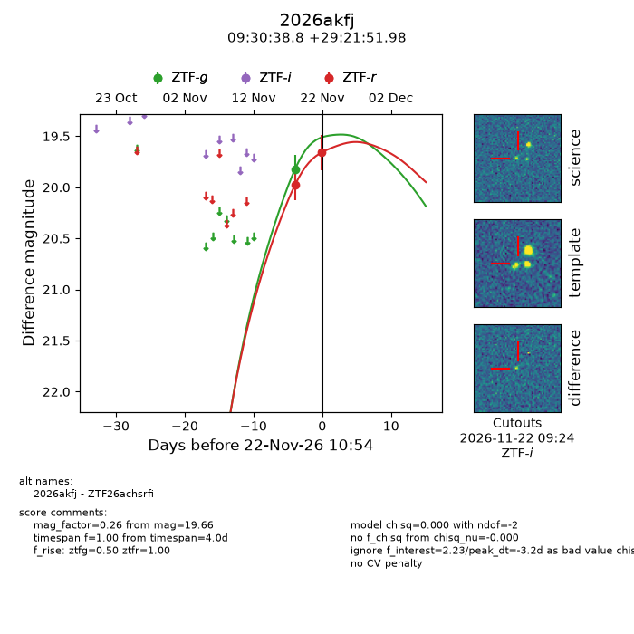
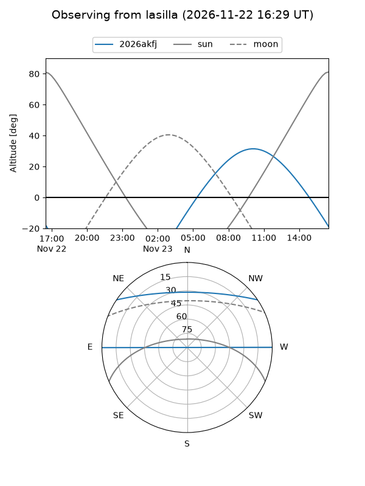
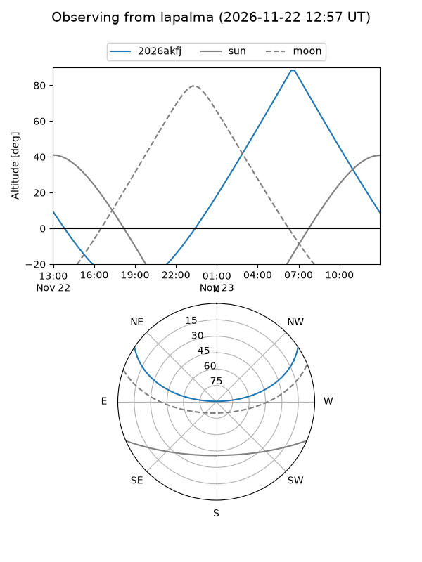
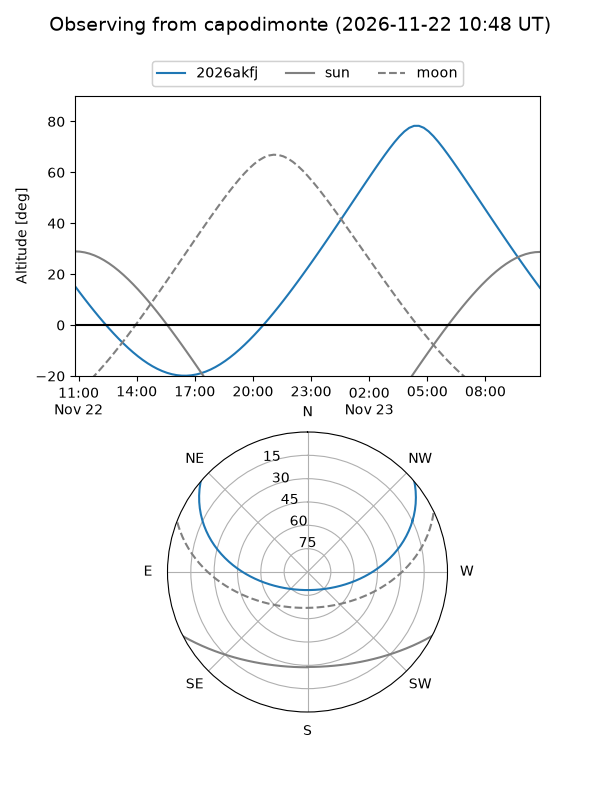
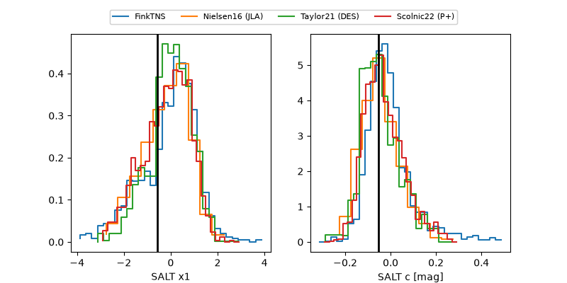

2026akfj
Target 2026akfj at 2026-11-22 10:55
Aliases and brokers:
FINK-ZTF: ztf.fink-portal.org/ZTF26achsrfi
Lasair-ZTF: lasair-ztf.lsst.ac.uk/objects/ZTF26achsrfi
ALeRCE-ZTF: alerce.online/object/ZTF26achsrfi
YSE-PZ: ziggy.ucolick.org/yse/transient_detail/2026akfj
TNS name: wis-tns.org/object/2026akfj
Direct TNS query: direct search
alt names
ZTF26achsrfi (ztf,fink_ztf)
2026akfj (tns,yse)
Coordinates:
equatorial (ra, dec) = 142.6617,+29.36444
equatorial (HMS+DMS) = 09:30:38.80,+29:21:51.98
galactic (l, b) = (197.7229,+46.06402)
Flags:
peak dt: -3.2
Photometry:
last ztfg=19.82, ztfr=19.66
1 ztfg, 2 ztfr detections
Lightcurve

Visibility



Additional plots
